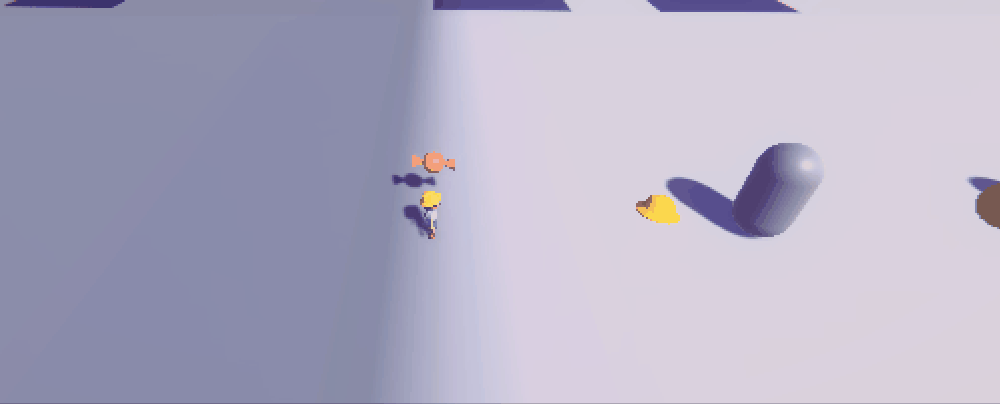

Sprouting Spirit: Dream Duo
Sprouting Spirit: Dream Duo is a 3D puzzle platformer that takes you on an adventure through the fantastical world of imagination with Maple and Cornelius. I worked on this game for my Senior Project, primarily as a programmer. I helped code the logic and behaviors for in-game assets like the platforms and collectibles, as well as an object selector editor tool to help with set dressing. Later on in the year, I began working as an artist as well, modeling and texturing several game assets.
Click here to download the game!Click here to visit the senior project website!

Programmed and modeled Cloud platforms

Helped program Collectible UI behavior

Programmed Hat Collectible behavior